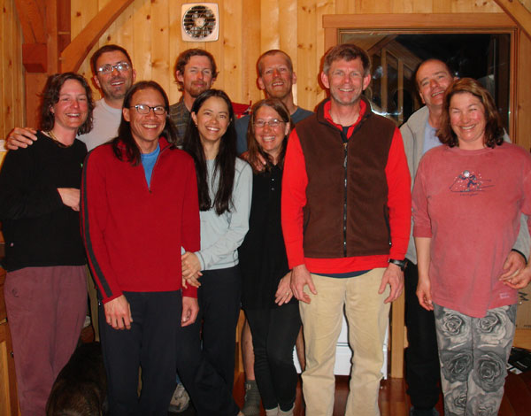

|
Going new places and trying new things is good.
That's how we ended up at the Kokanee Glacier Cabin in British
Columbia, north of Nelson. It was a lot of planning, organizing
and debating over wether we should hire a
cook
or
not, but we pulled it off. (without a cook, or guide for that matter).
Folks on their
way out of the cabin told us that the conditions were the worst
they had seen in twenty years. Lucky for us, recent and constant
snowing gave
us wonderful
powder skiing every day. There was so much snowing going on, in
fact, we ended up stuck in the cabin for 2 extra days as we waited
for the weather to clear and a heli to pick us up.
The Avy conditions never dropped below considerable
danger, so we never were able to push big lines or tour up to the
glacier. However, we never had a shortage of excitement as whoomping
and
class 2 avalanches accompanied us in many locations. With poor
visibility and fast snow, it was an excellent week to practice
tree skiing anyway.
We tried to squish a rental cart with our gear in Spokaine but it
didn't work.

We still had pleanty of room in the rental van so we hit the liquor
store and filled it up the rest of the way.

Helmüt was really sick on the way up. Although he never came out
of his sleeping bag during the packing stage, he continually attempted
to remain helpful.
Although you may feel strange walking around in ski boots without
a drop of snow to be seen anywhere, you feel validated when the
heli arrives.

This is where we were dropped off in our own private Kokanee.
Here's the little shack where we roughed it for 9 days. We affectionately
dubbed it "the mothership".

Here's some hot chicks we found hiding in the trees above the cabin...
No, actually it's telechick, twig-a-licious, and powder princess,
on skis finally.

Here the trip organizers have a gruelling debate over where to ski
the next day.
Our little cabin was always easy to find at the end of the day as
it's next to a big lake and has a big red circle around it.

Teem freak reaching for the clouds. At this point foothill was sick
in the cabin, reaching for the asprin.

Powder Princess and the Evil Dr. in the foreground, John Carter Peak
in the background.

Each member of the team has a distinct signature.
Helmüt and Pow Princess smiling for some reason..

Here's the slide Helmüt set off after a reassuringly stable ski cut.
(Humans included to show scale). It's great when people set off
avalanches
because afterward they're always willing to let you ski first.
This is the slide that Powder Princess set off and rode for a bit.
(Those are her turns into and out of the path). When you watch
a loved one tumbling in an avalanch, the memory burns quite clearly
into
your
mind.
A nicely placed ski cut by Helmüt set off this long running slide.
Looking at the toe of the glacier. Another time...

Big mountains look so small in photos.

Here's the old, fabled Slocan Chief Cabin. This hut was in use up
to just a few years ago. The poor folks who stayed here had to
use an outhouse!

Figure 8ing tracks is challenging when your 8ing turns that are
half the radius of your own.
After skiing a run about 5 times, on our last run I noticed
something in the trees. Upon closer inspection we discovered this
sad tribute to a skier who was in an avalanche and "skied into
the great white from this spot". A reminder to pay the mountians
due respect, and expect no respect in return.

Here's the crew in a picture the night before the day we thought we were leaving:
TeleChick, FarLeft, Evil Dr. Fu Manchu, Foothill, PowderPrincess, TwigLicious,
Helmüt, Prof Ragdoll, Boris, and Natasha.
The day we were to be flown out there was a major storm with bad
visibility. We remained on standby until 4:30, Hoping
for a clearing. It never
came. As
seen in this picture, there may have been moments of boredom as
we waited....
TeleChick lets her hair down.
And to pass the time we played games.
And more games.
Here's Marzy, the hut costodian. Besides being hairy and informative,
it was a pleasure to be stuck in a cabin for two days with him.
Thanks for everything Marzy! Come visit the land of Zion soon.
This is the whole hut custodian family. I suppose they get bored
sometimes too.
Alas, we did eventually leave the hut and return to the life of
the low-lander. And the pains of returning to work make planning
next
year's trip to Canada that much easier...
|